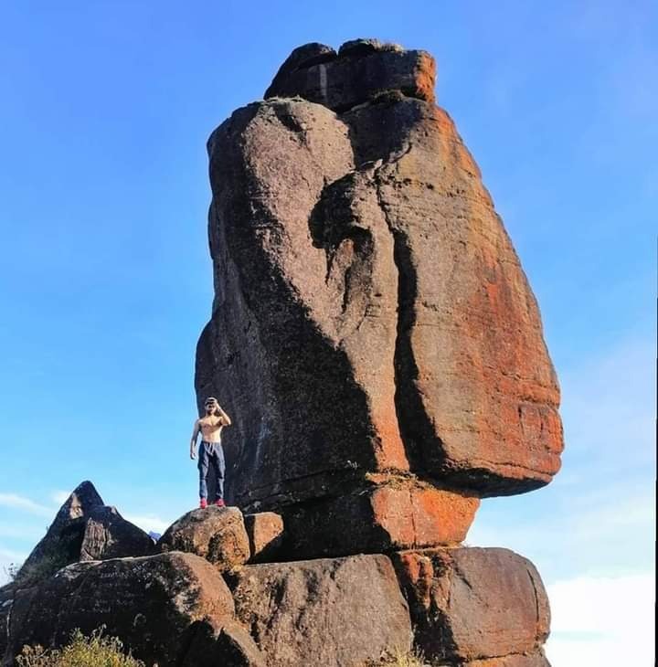

Kabaragala is a mountain in Sri Lanka's central province, part of the Dolosbage mountain range.
With a height of 1506 meters, it is known as the tallest mountain peak in this range.
It has almost flat topography near the top,
akin to the Horton Plains. There's also a massive fallout similar to the Word End.
Galboda Falls(ගල්බොඩ ඇල්ල) is a waterfall in Sri Lanka. It is located by
Nuwara Eliya District.
Galboda is along the railway track of Colombo to Badulla.
The environment is cool with much rain.
The waterfall is 30 m (98 ft) high, and the width ranges from between
3 m (9.8 ft)–6 m (20 ft), depending on the season.
Galoththa Ella Falls is located in Nawalapitiya. It stands at a height which exceeds 50 meters and a width which exceeds 60 meters.
It is also known as “Heightenford Falls” and “Sudugala Falls.” The water of this fall slides over a slanting rock bed.
The waterfall ends with a shallow pool about 2 feet deep and is a popular location for children to slide down the rock until they fall into the pool at the bottom.
However, this activity is possible only when the water levels are low and is quite risky.
Kadiyanlena Falls is situated in s located in Kadiyanlena village 10 km away from Nawalapitiya, a town close to Kandy.
Kadiyanlena Falls consists of three cascades and it stands at a height of 25 meters.
The road crosses a three-arched bridge over the third part of the falls.
Therefore, only the upper two parts of the waterfall can be seen from the road.
It Brings a amzaing view to the waterfall when you see the waterfall at its full height.
Due to less travel, the environment around the falls is still clean.

Raxagala is also known as Kinihira Kanda which is the second-highest peak in the Dolosbage range.
Raxagala Mountain stands at 1.438 meters (4,718 feet) in height.It's one of Dolosbage's most recognizable peaks.
Dolosbage is a village in the Kandy District of Sri Lanka's Central Province.
The Raxagala and Kabaragala rocks are the village's most prominent features.
Locals call it Kinihira Kanda, Paththini Amma Kanda is another name, and Wangedi Molgas Gala calls it that because of its shape.

@ischiwashere0 නාවලපිටියේ සැගවුණු පාරාදීසය.. kolapathana estate view point camping! Contact them: +94 76 137 3326 ##ischiwashere##travelcouple##travelsrilankawithus##travel##fouryoupage##CapCut##visitsrilanka##camping ♬ original sound - Ischi_was_here